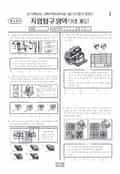

문제지

2018학년도 9월 모의평가 · 2017년 9월 시행
2018학년도 9모 직업탐구 기초 제도 1등급컷은 원점수 45점(추정), 표준점수 최고점은 74점입니다.
원점수 1등급컷은 공식 발표값이 아니라 EBSi·입시기관 값입니다. 등급별 값은 등급컷 표, 출처 구분은 데이터 원칙에 있습니다.

시험지를 먼저 풀어 보세요. 등급컷·표준점수·난이도는 흐리게 가려 뒀어요.
| 등급 | 원점수 | 표준점수 |
|---|---|---|
| 1 | 45 | 70 |
| 2 | 41 | 67 |
| 3 | 31 | 59 |
| 4 | 17 | 48 |
| 5 | 12 | 44 |
| 6 | 10 | 43 |
| 7 | 8 | 41 |
| 8 | 5 | 39 |
등급별 컷 · EBSi 원점수 추정 · 만점 50점
18번 정답 변경
이의신청 1문항 · 평가원 상세 답변 1문항
18번정답 변경
③ → ⑤
이의 요지
이의 신청 내용은 <보기>의 ㄴ에 제시된 방법으로도 정삼각형의 무게 중심을 찾을 수 있으므로 정답에 오류가 있다는 것입니다.
평가원 답변
본 문항은 기초 제도 과목의 ‘기본 도법에 의한 평면도형 그리기’에 대한 개념을 이해하고, 정삼각형의 무게 중심을 찾기 위한 작도 방법을 불국사의 석등 위치 찾기 상황에 적용하는 능력을 평가하는 문항입니다. 이의 신청 내용은 <보기>의 ㄴ에 제시된 방법으로도 정삼각형의 무게 중심을 찾을 수 있으므로 정답에 오류가 있다는 것입니다. 이에 대해 학회의 자문 내용을 종합하면, <보기>의 ㄴ도 정삼각형 ABC의 무게 중심을 찾는 과정에서 사용할 수 있으므로 <보기>의 ㄱ, ㄴ, ㄷ 3가지 선택지 모두 작도 방법에 해당한다고 볼 수 있습니다. 이상의 학회와 전문가들의 자문 결과를 토대로 ‘정삼각형의 무게 중심을 찾는 과정에서 <보기>의 ㄱ, ㄴ, ㄷ 모두를 사용할 수 있으므로 정답을 ③번에서 ⑤번으로 변경하는 것이 타당하다.’는 결론을 내렸습니다.
한국교육과정평가원이 교육부 보도자료로 공개한 표준점수 도수분포로 계산했습니다.
EBSi 응답자 기준으로 가장 많이 틀린 문항은 18번(3점)이고, 오답률은 80.4%입니다. 상위 15문항 중 1문항은 정답보다 한 오답을 고른 사람이 더 많았습니다(18번: 정답 ⑤ 19.6%, ③ 58.8%). 오답률 50%를 넘은 문항은 2개입니다.
| 순위 | 문항 | 배점 | 오답률 | 정답 | 많이 고른 오답 |
|---|---|---|---|---|---|
| 1 | 18번 | 3점 | 80.4% | ⑤ | ③ 58.8% |
| 2 | 19번 | 2점 | 52.9% | ⑤ | ④ 20.6% |
| 3 | 20번 | 3점 | 44.1% | ① | ③ 16.7% |
| 4 | 12번 | 3점 | 43.1% | ③ | ④ 12.7% |
| 5 | 9번 | 3점 | 38.2% | ⑤ | ④ 16.7% |
| 6 | 5번 | 3점 | 35.3% | ③ | ① 16.7% |
| 7 | 2번 | 3점 | 35.3% | ② | ① 17.6% |
| 8 | 8번 | 2점 | 33.3% | ④ | ② 11.8% |
| 9 | 11번 | 3점 | 32.4% | ④ | ① 9.8% |
| 10 | 14번 | 2점 | 29.4% | ③ | ① 13.7% |
| 11 | 10번 | 2점 | 29.4% | ⑤ | ③ 7.8% |
| 12 | 7번 | 3점 | 28.4% | ② | ① 8.8% |
| 13 | 4번 | 2점 | 28.4% | ④ | ① 9.8% |
| 14 | 16번 | 3점 | 25.5% | ② | ① 7.8% |
| 15 | 6번 | 2점 | 22.6% | ⑤ | ① 5.9% |
EBSi 가채점 응답자 기준 · 전 문항 중 오답률 상위 15문항
출처: EBSi 역대 등급컷·오답률 공개 화면. 가채점에 참여한 EBSi 이용자 응답이라 전체 응시자 정답률과는 다를 수 있습니다.
발행 기관: 한국교육과정평가원(KICE). 파일 위치: 이 사이트가 보관한 사본. 저작권은 발행 기관에 있습니다. 원본과 다르거나 게시 중단이 필요하면 연락처로 알려 주세요. 등급컷 출처 구분은 데이터 원칙에서 설명합니다.
막대 색은 역대 대비 난이도 · 진한 막대가 이 시험 · 막대를 누르면 그 회차로 이동
| 회차 | 1등급컷 | 표점 최고 | 1등급 표점 | 난이도 |
|---|---|---|---|---|
| 9모2018학년도이 시험 | 45 | 74 | 70 | 보통 |
| 6모2018학년도 | 40 | 83 | 73 | 매우 어려움 |
| 수능2017학년도 | 46 | 72 | 69 | 쉬움 |
| 9모2017학년도 | 43 | 77 | 71 | 보통 |
| 6모2017학년도 | 40 | 82 | 72 | 매우 어려움 |